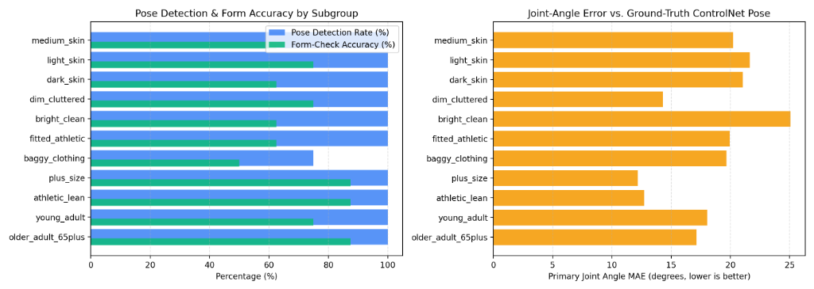

FormCoach: On-Device AI Exercise Rep Counter & Posture Coach
A privacy-first, zero-cost web application that counts repetitions, detects posture mistakes in real time, and audits demographic fairness with pose-conditioned diffusion.
Mohit Parag · S P Jain School of Global Management
Home Fitness Needs Accessible, Private Technique Feedback
Target user: an individual exercising at home in front of a laptop or phone camera, deciding how to adjust posture mid-set and tracking session quality.
False Negative (Missed Error)
Failing to warn on lumbar rounding or sagging hips reinforces unsafe habits and raises musculoskeletal injury risk.
False Positive (Spurious Cue)
Over-flagging minor anatomical variation interrupts workout flow and erodes user trust in the coach.
Occlusion / Low Light Risk
Guessing angles when joints are hidden creates erratic rep counts. Mitigation: pause & display "Not Sure — Low Visibility" (<60%).
Six-Stage Client-Side Computer Vision Pipeline
Modular ES-module architecture running in real time inside Chrome, Edge, or Safari with zero backend dependencies.
View-invariant (left or right facing), ultra-lightweight (4.01 KB vs. 100 MB limit), sub-millisecond latency alongside MediaPipe, and prevents memorizing background/demographic shortcuts.
Smoothing, Biomechanical Geometry & Hysteresis State Machine
1. Adaptive Smoothing (One-Euro Filter)
- Raw pose landmarks jitter by 2–5°, causing threshold chatter.
- One-Euro Filter adapts cutoff frequency to landmark velocity: smooth at rest, responsive during fast reps.
- Users can toggle Smoothing ON/OFF live in the UI to verify its effect.
2. 10-Dim Feature Vector (Left/Right Invariant)
- Auto-selects side with highest average visibility across 6 key joints.
- Features:
exercise_one_hot (3),kneeAngle,hipAngle,elbowAngle,torsoTiltDeg,bodyLineAngle,kneeOverToeRatio,backKneeAngle.
3. 4-State Hysteresis Repetition Machine
Separate entry/exit thresholds + 600–650 ms duration debounce prevent double-counting.
| Exercise | Primary Joint | Descend | Bottom | Up |
|---|---|---|---|---|
| Squat | Knee | < 142° | ≤ 108° | ≥ 158° |
| Push-up | Elbow | < 140° | ≤ 105° | ≥ 155° |
| Lunge | Front Knee | < 140° | ≤ 108° | ≥ 156° |
Key Form Checks: Squat (Go lower, Back not straight >42°, Knees past toes) · Push-up (Hips sagging <156°, Go lower) · Lunge (Torso lean >26°, Front knee past toes).
Baseline Rule Engine vs. Trained ONNX Pose-Form Classifier
ONNX MLP Confusion Matrix (Held-Out n = 900)
| True \ Pred | good_form | depth_issue | alignment_issue |
|---|---|---|---|
| good_form (300) | 296 | 1 | 3 |
| depth_issue (300) | 1 | 298 | 1 |
| alignment_issue (300) | 0 | 1 | 299 |
Per-Class Metrics & Hybrid Design
| Class | Precision | Recall | F1-Score |
|---|---|---|---|
good_form | 99.66% | 98.67% | 0.9916 |
depth_issue | 99.33% | 99.33% | 0.9933 |
alignment_issue | 98.68% | 99.67% | 0.9917 |
In the live app, users can switch between Baseline (Rules), ONNX ML, and Hybrid—combining rule specificity with ML probability bars.
Pose-Conditioned Diffusion Fairness Audit (OpenPose ControlNet)
Why scrape biased gym videos when we can hold the exact ground-truth exercise skeleton constant and isolate one demographic or environmental factor at a time?
1. Exact Ground-Truth Skeletons
Programmatically rendered 4 canonical OpenPose BODY-18 conditioning maps: squat_good, squat_bad_back, pushup_good, and lunge_good with known ground-truth angles.
2. Controlled Diffusion Synthesis
Stable Diffusion v1.5 + OpenPose ControlNet (lllyasviel/sd-controlnet-openpose, scale 1.0, 20 UniPC steps) generated 88 images across 11 subgroups (2 seeds each).
3. Automated Subgroup Audit
Ran the exact same MediaPipe Pose Landmarker Lite model used in our browser app on all 88 images, measuring Detection Rate, Landmark Visibility, Angle MAE, and Form Accuracy.
5 Controlled Fairness Axes Tested (11 Subgroups)
Subgroup Detection, Joint-Angle MAE & Form Accuracy

Privacy by Design, Safety Gates & Next Steps
Responsible AI Safeguards Built In
- Zero Data Collection: 100% browser-side inference; no accounts, cookies, or cloud video upload.
- Human-in-the-Loop Uncertainty: Explicit "Not Sure — Low Visibility" banner (<60%) stops hallucinated counts.
- Medical Disclaimer: Educational fitness support only—not medical or physiotherapy advice.
- Inclusive Coaching: Constructive cues + built-in Web Speech voice feedback + 1-page
MODEL_CARD.md. - Open Licences: MIT (code/ONNX), Apache 2.0 (MediaPipe & ControlNet), Pexels Free (video clips).
Known Limitations & Remaining Milestone
- Baggy Clothing & Strict Side View: Loose garments hide hip/knee joints; 45° angle & fitted wear recommended.
- Synthetic-to-Real Nuance: SD 1.5 occasionally introduced slight pose drift on bright-room prompts (25° MAE).
- 2D vs. 3D Depth: Future work can fuse MediaPipe 3D world landmarks and a temporal 1D-CNN ONNX model.
- Final Exam-Week Step: Complete ground-truth rep-count labelling on our 20+ collected Pexels clips (expanding to 30+) using
ml/evaluate_videos.py.
FormCoach Running Live in the Browser (Upload a Clip or Start Camera)
All Four Learning Outcomes, Gate Conditions & Stretch Goals Met
MAIB AI 221 Rubric Coverage
- ✅ LO A (Real-World CV): Pose estimation, One-Euro smoothing, joint geometry, hysteresis state machine.
- ✅ LO B (Evaluation): Baseline (99.33%) vs. ONNX MLP (99.22%), confusion matrix, subgroup error analysis.
- ✅ LO C (Live Free App — Gate #1): Public GitHub Pages HTTPS URL tested on laptop & phone, zero paid APIs.
- ✅ LO D (GenAI Audit — Gate #2): 88 OpenPose ControlNet images across 11 subgroups with measured bias findings.
Stretch Goals & Links
- 🔊 Voice Coaching: Built-in Web Speech API real-time cues.
- 📄 PDF Session Report: Rep-by-rep breakdown with one-click print/export.
- 🌐 Live App: mohitparag.github.io/CVA_Final_Project_Computer_Vision
- 💻 Code & Docs: github.com/mohitparag/CVA_Final_Project_Computer_Vision
Thank You — Questions & Discussion
Press S to toggle Speaker Notes · Use ← / → arrows to navigate slides